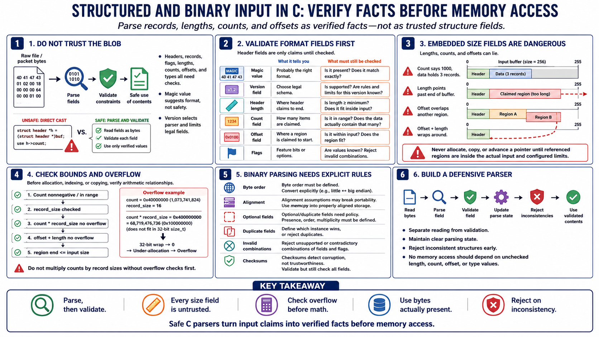

Structured and Binary Input
Connecting to LMS... Progress: in progress

Narration
Structured and binary input should be parsed as a series of verified facts, not as a blob that can be cast into a structure and trusted. Records, headers, magic values, version fields, lengths, counts, offsets, and flags all need validation before they influence memory access. A magic value may confirm that the file is probably the expected format, but it does not prove that the rest of the file is safe. A version field may select a parser, but it should also constrain which fields are legal for that version.
Embedded size fields are a common source of vulnerabilities. A file or packet can claim to contain a thousand records when the available data only holds three. A length can point beyond the end of a buffer. An offset can point backward, overlap another region, or wrap when combined with a length. Before allocating, copying, or advancing a pointer, check that each referenced region is inside the actual input and inside your configured limits. Do not multiply counts by record sizes without checking overflow first.
Binary parsing also needs explicit decisions about byte order, alignment, optional fields, duplicate fields, and invalid combinations. Checksums can help detect accidental corruption, but they do not make untrusted input trustworthy. Defensive parsers separate reading from validation, maintain a clear parsing state, and reject inconsistent structures before using their contents. The practical rule is simple: no memory access should depend on a length, count, offset, or type value until that value has been checked against both the format rules and the bytes actually present.